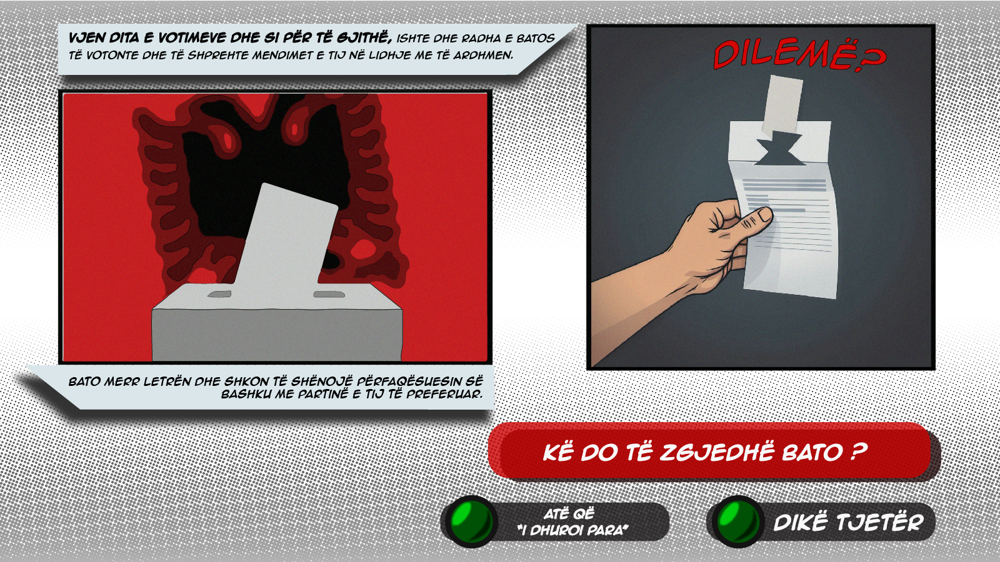
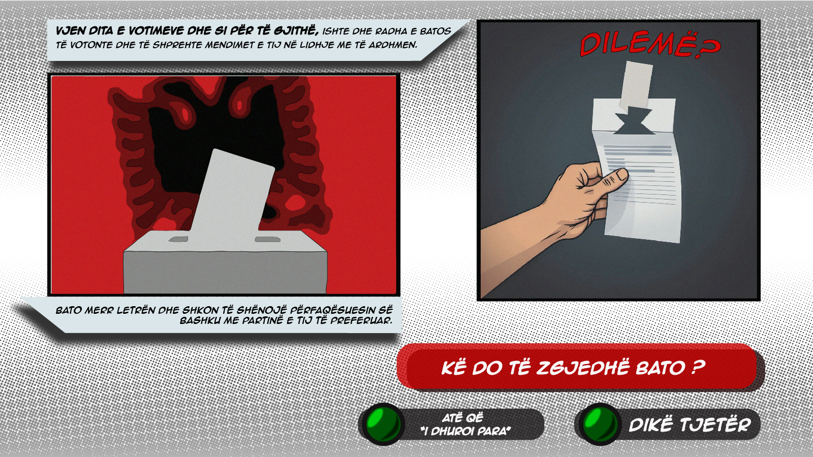

Duke ditur që "Comics" janë mëse të njohura nga të rinjtë dhe sipas shumë studimeve, vërehet se 30-40% e grupmoshës 13-24 vjeç lexojnë rregullisht "Comics".
Ne munduam që nëpërmjet këtij stili narrative, një fenomen i tillë si korrupsioni zgjedhor të jetë më i kuptueshëm e më afër të rinjve shqiptarë, ku synohet ndërgjegjësimi dhe pranimi i këtij problemi, e kështu rruga drejt zvogëlimit masiv të këtij fenomeni të jetë më e shkurtër.
E, ç'do të bësh në vend të Batos? Mëso më poshtë.


 

I ndikuar dhe nën presion nga i gjithë shoqëria, Bato e shqyen fletën e votimit dhe e bën atë të pavlefshme. Ai nuk votoi për atë që "i bëri nder", por as për atë që donte.
Ishte mundësia për të shprehur mendimin ndaj vendimmarrjes në vend, por Bato e çoi dëm.
Një herë në katër vjet të vjen kjo mundësi. Andaj, përfito sa nuk është vonë dhe bëji ballë të këqijave duke përmirësuar shoqërinë ku bën pjesë.
Mos u bëj si Bato.

ElektorIAL është një platformë e pavarur dhe inovative e krijuar për të rritur identitetin zgjedhor dhe për të luftuar korrupsionin në procesin demokratik në Shqipëri. Ne besojmë se një votues i informuar është themeli i një demokracie të shëndetshme, ndaj synimi ynë është t’u ofrojmë qytetarëve informacion të qartë, të saktë dhe të paanshëm mbi programet e partive politike.
Platforma jonë është e hapur për të gjithë, si për qytetarët brenda vendit ashtu edhe për diasporën shqiptare, duke i ndihmuar ata të marrin vendime të informuara për të ardhmen e Shqipërisë. ElektorIAL angazhohet për transparencë, llogaridhënie dhe fuqizimin e qytetarëve përmes informacionit të verifikuar dhe të lehtësisht të aksesueshëm.
Nëpërmjet ElektorIAL, çdo votues ka mundësinë të kuptojë më mirë ofertat politike dhe të zgjedhë me besim ata që përfaqësojnë më mirë vizionin e tij për katër vitet e ardhshme. Sepse demokracia nuk është thjesht një e drejtë – është një përgjegjësi.
Kjo platformë është mbështetur nga Qendra Rinore H.A.N.A, në kuadër të ndërhyrjeve “THRIVE” dhe “Të Rinjtë për të Vërtetën”, të financuara nga Ministria e Punëve të Jashtme të Hollandës dhe Rrjeti SEECheck, në mbështetje të integritetit zgjedhor dhe edukimit mediatik.
Partner ekskluziv: